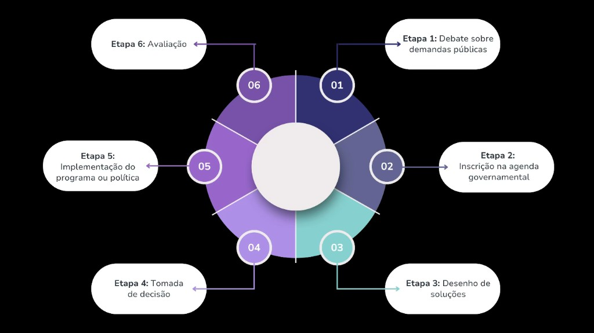

Módulo 3 | Aula 1
Monitoramento e avaliação de programas e políticas públicas
O modelo clássico do ciclo de políticas públicas
O processo de formulação, implementação e avaliação das políticas públicas pode ser dividido em etapas para melhor entendimento. Um dos modelos analíticos mais utilizados para entender esse processo é o modelo do ciclo da política pública.
De forma geral, o ciclo da política pública organiza o processo político-administrativo em fases interligadas, que vão desde o reconhecimento de um problema social até a avaliação dos resultados alcançados. Conheça a seguir as principais etapas do ciclo de políticas públicas:

Uma demanda ou problema de saúde só passa a ser tratado como objeto de política pública quando é socialmente reconhecido e politicamente priorizado. No contexto da saúde, isso pode ocorrer, por exemplo, quando há aumento significativo da mortalidade por uma determinada doença, crescimento de desigualdades no acesso aos serviços ou emergência de novos riscos sanitários. Indicadores epidemiológicos, estudos científicos, pressão de movimentos sociais, mídia e crises sanitárias desempenham papel central nesse processo. A primeira etapa do ciclo, portanto, consiste no debate sobre as diferentes demandas públicas.
A inscrição das demandas na agenda governamental ocorre quando, a partir da etapa de debates, as demandas são priorizadas pelo governo e têm a chance de ser objeto de políticas concretas. Imagine, por exemplo, o aumento de casos de dengue em determinado município: as notificações de casos começam a aumentar, a mídia destaca o problema, especialistas são convidados a apresentar soluções, há uma pressão política para que ações sejam tomadas. A partir desse cenário, como resultado, o enfrentamento à dengue entra na agenda governamental.
Uma vez na agenda, entra-se na fase de formulação da política, em que são desenhadas as propostas de soluções. Nessa etapa, técnicos, gestores, pesquisadores e outros atores analisam alternativas, definem objetivos, estratégias, público-alvo e formas de financiamento. Na saúde pública, essa fase exige o uso intensivo de evidências científicas, dados epidemiológicos e informações sobre a capacidade do sistema de saúde. Por exemplo, no caso da Política Nacional de Atenção Básica, a formulação envolveu debates sobre o modelo de atenção, a importância da Estratégia Saúde da Família, a organização das equipes multiprofissionais e a descentralização da gestão para estados e municípios.
Na tomada de decisão, as alternativas formuladas são selecionadas e oficialmente adotadas pelo Estado. Essa decisão pode se materializar por meio de leis, decretos, portarias ou resoluções. No setor saúde, essa fase é fortemente influenciada por negociações políticas, limitações orçamentárias e pactuações interfederativas. A criação do SUS, por exemplo, foi resultado de um processo decisório histórico, consolidado na Constituição Federal de 1988, que definiu a saúde como direito de todos e dever do Estado, estabelecendo as bases legais para a organização do sistema público de saúde no país.
Após a decisão formal, inicia-se a implementação, fase em que as diretrizes e normas são convertidas em ações concretas. Na saúde pública, a implementação de programas e políticas envolve a estruturação de serviços, contratação e capacitação de profissionais, alocação de recursos financeiros, aquisição de insumos e articulação entre os diferentes níveis de governo. Essa etapa é crucial, pois muitas políticas bem formuladas fracassam devido a problemas de implementação, como falta de recursos, fragilidades na gestão ou desigualdades territoriais. Um exemplo é a implementação do Programa Nacional de Imunizações: embora as diretrizes sejam definidas em nível nacional, o sucesso da política depende da capacidade local de organizar salas de vacinação, garantir armazenamento das doses, mobilizar a população e registrar adequadamente as doses aplicadas.
A última etapa do ciclo é a avaliação, que consiste na análise dos resultados alcançados. A avaliação pode ser realizada durante a execução (avaliação de processo) ou após determinado período (avaliação de resultados e de impacto). No campo da saúde pública, o uso de sistemas de informação permite cálculo e análise de indicadores que permitem o acompanhamento da política nas diferentes fases. Por exemplo, a avaliação de uma política de combate à mortalidade infantil pode analisar desde a lacuna de pré-natal (diagnóstico), a ampliação e melhoria do pré-natal (processo) até a redução efetiva dos óbitos infantis (impacto).
Paulo Jannuzzi (2023) propõe um novo modelo, no qual as fases de implementação da política são entremeadas por processos avaliativos de diferentes naturezas — como avaliação de processos, de resultados, diagnósticos de públicos-alvo potenciais. Leia o texto "Do ciclo de formulação e avaliação de políticas à espiral de implementação" para conhecer essa perspectiva: Do ciclo de formulação e avaliação de políticas à espiral de implementação.